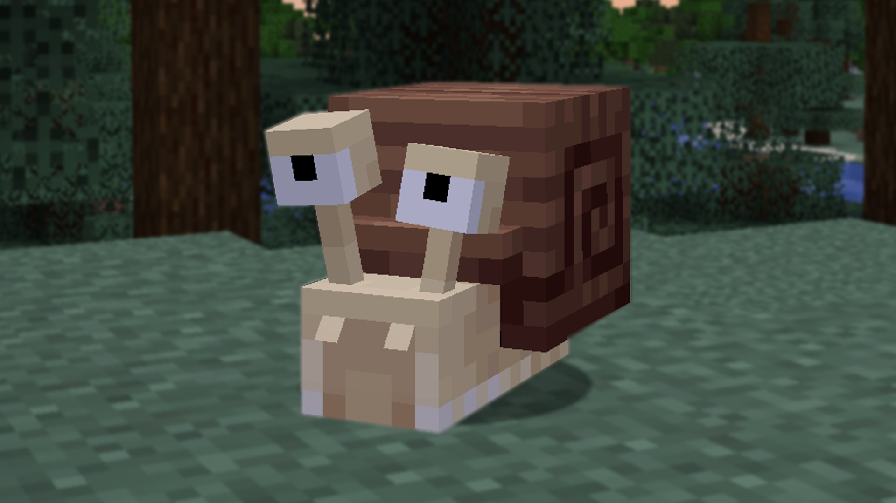

Historia
Minecraft fue creado por Markus Persson, también conocido como "Notch", y lanzado por primera vez al público el 17 de mayo de 2009 como una versión alfa. Desde entonces, el juego ha evolucionado significativamente, pasando por varias etapas de desarrollo y ganando una enorme base de fans en todo el mundo. En 2011, Mojang, la compañía detrás de Minecraft, lanzó la versión completa del juego. En 2014, Microsoft adquirió Mojang y Minecraft, asegurando su continuo desarrollo y expansión.
La etapa beta comenzó en 2010 y el creador dejó su trabajo diurno para trabajar a tiempo completo en Minecraft, agregando nuevas funciones, actualizando el juego y solucionando errores. Si bien las nuevas versiones de otros juegos cuestan dinero, todas las correcciones de errores fueron gratuitas durante este ciclo de desarrollo.
La fase beta solo comenzó una vez que el editor Mojang se interesó en el proyecto y comenzó a financiar su desarrollo. Eventualmente lanzarían una versión completa del juego en 2011. Vendió millones de copias y generó un fenómeno mundial, pero aún quedaban muchos cambios por venir para Minecraft.
Una vez que se publicó el juego, aún se realizaron nuevas actualizaciones y se solucionaron los errores. Se instalaron nuevos hosts de servidor, lo que permitió que el juego funcionara mejor y hiciera mucho más con su poder de procesamiento. El mundo se expandió en tamaño a medida que los jugadores intentaban viajar a través del espacio digital aparentemente interminable. Fue diseñado para continuar indefinidamente y se agregaron nuevas áreas para hacer que el juego fuera más interesante.
El Nether y el End se agregaron al mundo base. El Nether era una región parecida a un infierno a la que solo se podía acceder a través de un portal. The End era una serie de islas, en las que residía el jefe final del juego. Una vez que el jefe era derrotado, los créditos se acumulaban, pero los jugadores podían continuar volviendo a sus mundos y explorar el entorno del juego después de vencerlo.
La etapa beta comenzó en 2010 y el creador dejó su trabajo diurno para trabajar a tiempo completo en Minecraft, agregando nuevas funciones, actualizando el juego y solucionando errores. Si bien las nuevas versiones de otros juegos cuestan dinero, todas las correcciones de errores fueron gratuitas durante este ciclo de desarrollo.
Mods Más Utilizados e Importantes
Los mods de Minecraft han transformado el juego en una experiencia completamente personalizable. A continuación, se presentan algunos de los mods más populares y significativos:
- Optifine: Mejora el rendimiento del juego, añade soporte para shaders y permite configuraciones gráficas avanzadas.
- Biomes O' Plenty: Introduce una gran variedad de nuevos biomas, enriqueciendo la exploración del mundo.
- Tinkers' Construct: Permite a los jugadores crear herramientas y armas personalizadas con diferentes materiales y habilidades.
- JourneyMap: Añade un mapa interactivo en tiempo real que facilita la navegación y exploración.
- IndustrialCraft 2: Introduce mecánicas de automatización, energía y maquinaria avanzada.
- Thaumcraft: Explora la magia y alquimia en Minecraft, añadiendo un sistema único de investigación y hechicería.
- RLCraft: Convierte Minecraft en un juego de supervivencia extrema con nuevas mecánicas y desafíos.
Estos mods no solo amplían las posibilidades del juego, sino que también han inspirado a miles de jugadores a experimentar y crear sus propias modificaciones, manteniendo a Minecraft como uno de los juegos más innovadores y versátiles de todos los tiempos.
Mods
Los mods de Minecraft son modificaciones creadas por la comunidad que amplían las posibilidades del juego. Desde nuevos bloques y herramientas hasta mundos completamente nuevos, los mods permiten a los jugadores personalizar su experiencia de juego. Algunos de los mods más populares incluyen "Optifine" para mejorar el rendimiento, "Biomes O' Plenty" para añadir nuevos biomas, y "Tinkers' Construct" para crear herramientas personalizadas. Además, los mods han jugado un papel importante en la historia de Minecraft, ayudando a mantener su relevancia y popularidad a lo largo de los años. La comunidad de modding ha sido fundamental para explorar nuevas ideas y expandir los límites de lo que es posible dentro del juego, convirtiendo a Minecraft en una plataforma creativa sin igual.
